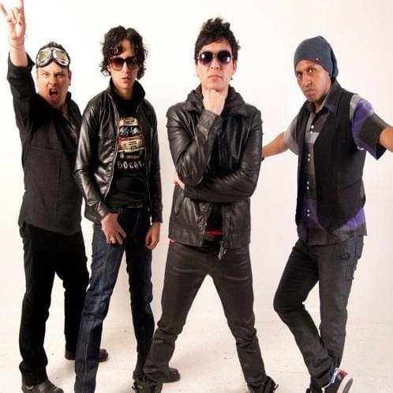
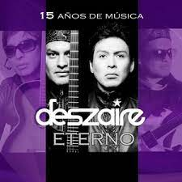
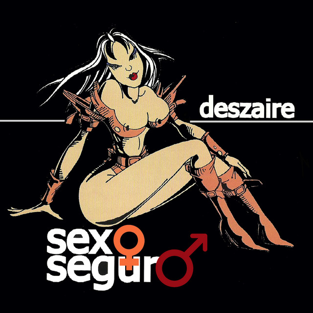
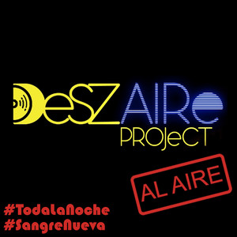

Deszaire es una banda boliviana de pop rock, rock alternativo y ska rock o 2 Tone Latino, formada en La Paz por Omar Ríos (voz), Marcelo Aguirre (guitarra), Gabriel Trujillo (guitarra), Rodrigo Bernal (bajo) y Germán Bildoso (batería), considerada como una de las bandas más representativas del rock boliviano.
LDeszaire nació el 17 de marzo del año 1999 en el taller cultural de la Facultad de Derecho de la Universidad Mayor de San Andrés, en la ciudad de La Paz, Bolivia, pero no fue hasta 2001 cuando ganó cierta relevancia al ser elegida entre una de las mejores 10 bandas de la Marathon Rock de ese año. Dos años después, el 2003 la banda sacó su primer disco, al que le seguirían otros más. Deszaire compartió escenario con cantantes y bandas reconocidos internacionalmente, como Juanes, Café Tacuba y Babasónicos. El origen del nombre banda, en palabras de sus propios integrantes, es el siguiente: “No tiene un significado como tal, éramos changos así que queríamos que se llame desmadre, despute, entonces Marcelo López, que hoy vive en Santa Cruz, agarró una chamarra de jean que estaba de moda y puso con un marcador Deszaire, incluyendo la ‘sz’, nos pareció genial. Después siempre nos preguntaban eso, pero era la ocurrencia de un amigo”.
Fue vocalista de la banda de rock boliviana Deszaire, considerada por muchos como ícono de la música boliviana. Empezó con la agrupación en 1999, cuando era estudiante de Derecho en la Universidad Mayor de San Andrés. Con Deszaire grabó cuatro discos de estudio: Mucha Leche (2003), Sexo seguro (2004), XXX (2007) y Libre (2012). También se desempeñó como compositor y productor.4
La banda estaba compuesta por Omar Ríos (voz), Marcelo Aguirre (guitarra), Abraham Carrillo (batería) y Álex Iturralde (bajo). El vocalista, Omar Ríos, falleció el 8 de marzo del 2022.
|  | |
|  | |
|  |